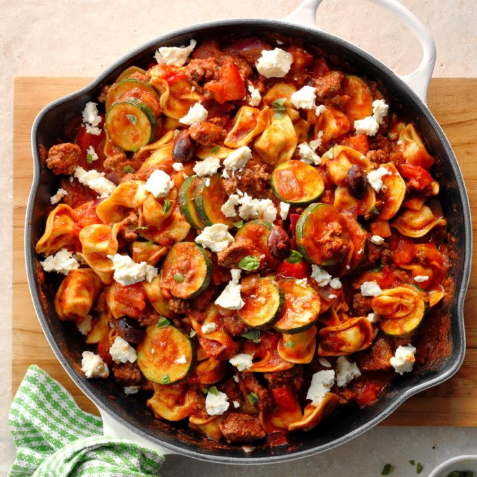
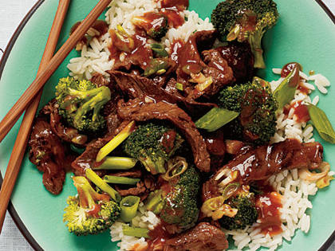
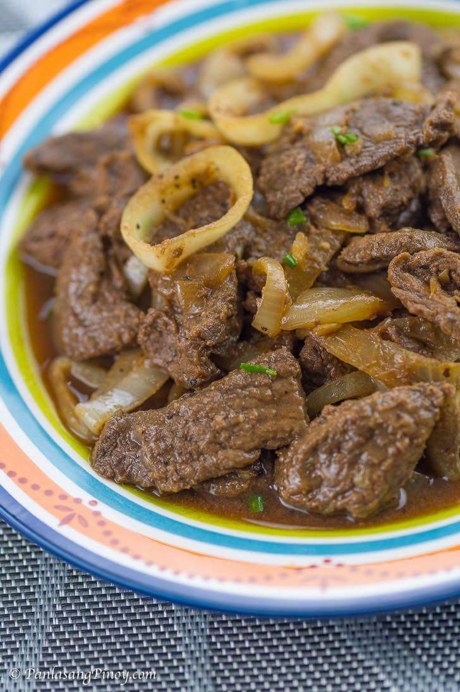
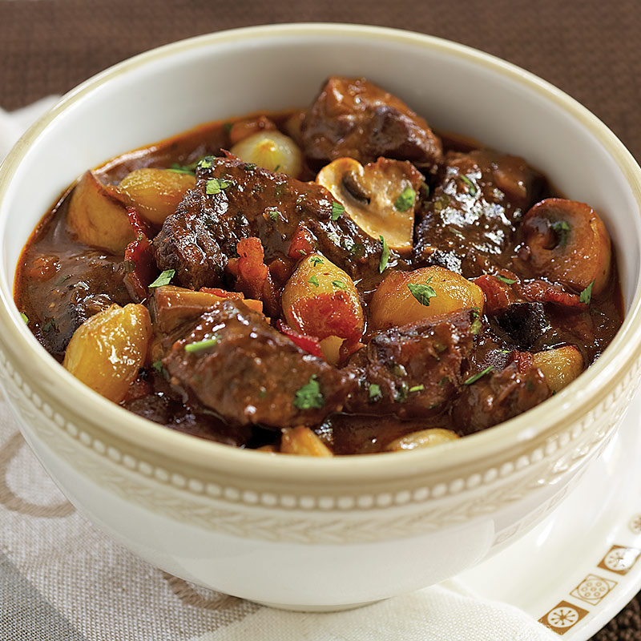
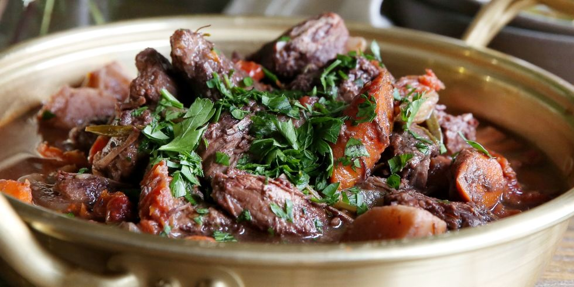
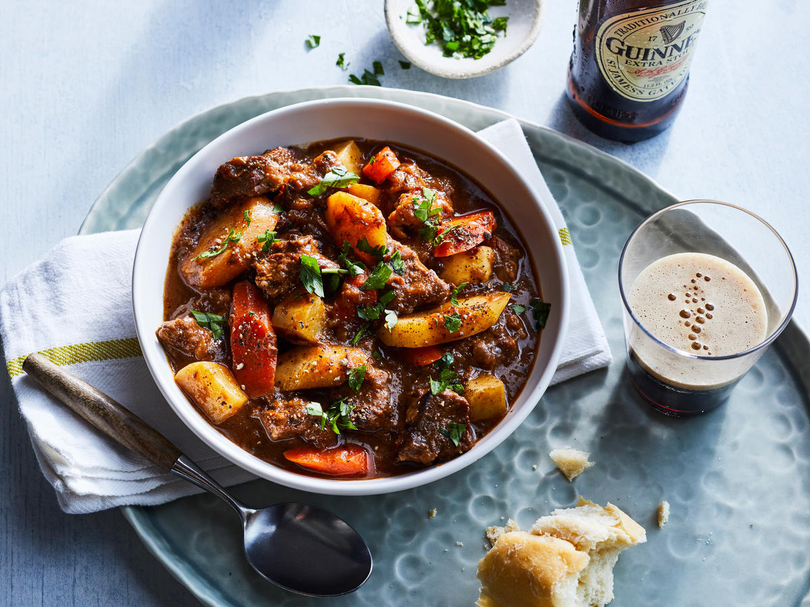
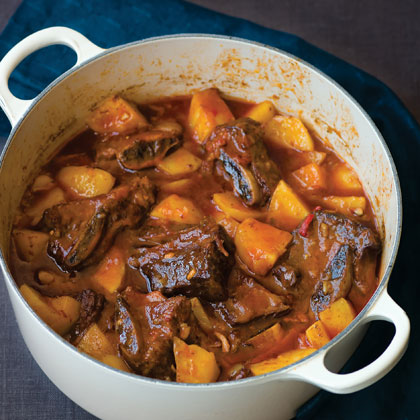
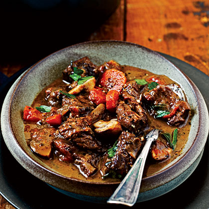
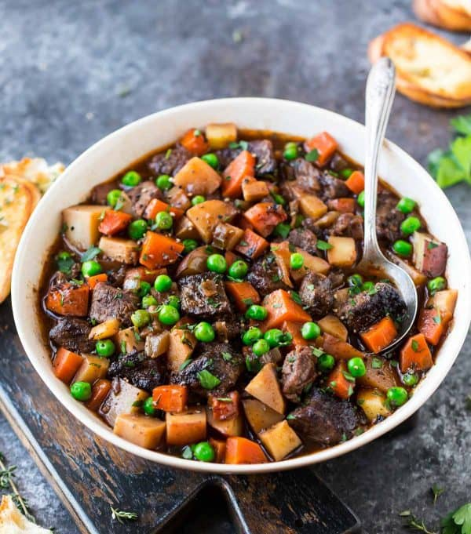

Beef
Greek Tortellini Skillet

Prep/TotalTime: 30 mins
Ingredients:
- 1 package (19 ounces) frozen cheese tortellini
- 1 pound ground beef
- 1 medium zucchini, sliced
- 1 small red onion, chopped
- 3 cups marinara or spaghetti sauce
- 1/2 cup water
- 1/4 teaspoon pepper
- 2 medium tomatoes, chopped
- 1/2 cup cubed feta cheese
- 1/2 cup pitted Greek olives, halved
- 2 tablespoons minced fresh basil, divided
How To Make:
1. Cook tortellini according to package directions. Meanwhile, in a large skillet, cook the beef, zucchini and onion over medium heat until meat is no longer pink; drain.
2. Drain tortellini; add to skillet. Stir in the marinara sauce, water and pepper. Bring to a boil. Reduce heat; simmer, uncovered, for 5 minutes. Add the tomatoes, cheese, olives and 1 tablespoon basil. Sprinkle with remaining basil.
Beef Broccoli Stir-Fry

Prep/Total Time: 25 mins
Ingredients:
- 1/2 teaspoon garlic powder
- 3 tablespoon cornstarch, divided
- 2 tablespoons plus 1/2 cup water, divided
- 1 pound boneless beef top round steak, cut into thin 2-inch strips
- 1/4 cup soy sauce
- 2 tablespoons brown sugar
- 1 teaspoon ground ginger
- 2 tablespoons canola oil, divided
- 4 cups fresh broccoli florets
- 1 small onion, cut into thin wedges
- Hot cooked rice
How To Make:
1. Mix garlic powder and 2 tablespoons each cornstarch and water; toss with beef. In a small bowl, mix soy sauce, brown sugar, ginger and the remaining cornstarch and water until smooth.
2. In a large skillet, heat 1 tablespoon oil over medium-high heat; stir-fry beef until browned, 2-3 minutes. Remove from pan.
3. In same pan, stir-fry broccoli and onion in remaining oil over medium-high heat until crisp-tender, 4-5 minutes. Stir soy sauce mixture; add to pan. Cook and stir until thickened, 1-2 minutes. Return beef to pan; heat through. Serve with rice.
Beefsteak (Filipino Style)

Prep/Total Time: 1 hour
Ingredients:
- 1 1/2 lbs beef sirloin thinly sliced
- 5 tablespoons soy sauce
- 4 pieces calamansi or 1-piece lemon
- 1/2 tsp ground black pepper
- 3 cloves garlic minced
- 3 pieces yellow onion sliced into rings
- 4 tablespoons cooking oil
- 1 cup water
- 1 pinch salt
How To Make:
1. Marinate beef in soy sauce, lemon (or calamansi), and ground black pepper for at least 1 hour. Note: marinate overnight for best result.
2. Heat the cooking oil in a pan then pan-fry half of the onions until the texture becomes soft. Set aside.
3. Drain the marinade from the beef. Set it aside. Pan-fry the beef on the same pan where the onions were fried for 1 minute per side. Remove from the pan. Set aside.
4. Add more oil if needed. Saute garlic and remaining raw onions until onion softens.
5. Pour the remaining marinade and water. Bring to a boil.
6. Add beef. Cover the pan and simmer until meat is tender. Note: Add water as needed.
7. Season with ground black pepper and salt as needed. Top with pan-fried onions.
8. Transfer to a serving plate. Serve hot. Share and Enjoy
Beef Burgundy Stew

Prep/Total Time: 3hrs 45mins
Ingredients:
- 3 pounds beef stew meat
- 2 cups red wine
- 2 tablespoons butter
- 2 tablespoons olive oil
- 1 yellow onion, coarsely chopped
- 2 large carrots, sliced
- 3 garlic cloves, chopped
- 2 teaspoons chopped fresh thyme
- 1 tablespoon all-purpose flour
- 2 teaspoons table salt
- 1 teaspoon freshly ground black pepper
- 1/4 to 1/2 cup beef broth
How To Make:
1. Place meat and wine in a medium bowl; chill 1 hour. Remove meat using a slotted spoon; reserve wine in a small saucepan. Pat meat dry with paper towels.
2. Cook reserved wine over medium-high heat, stirring occasionally, 15 minutes or until reduced to 1 cup.
3. Melt butter with oil in a Dutch oven over medium-high heat; add meat, and cook 5 minutes, stirring to brown all sides. Add onion and next 3 ingredients, and cook, stirring often, 15 minutes or until vegetables and meat are cooked. Sprinkle flour over meat mixture, and cook, stirring constantly, 1 minute. Stir in reduced wine, salt, pepper, and 1/4 cup beef broth. Cover and reduce heat to low; simmer, stirring occasionally, 2 hours, adding up to 1/2 cup beef broth if needed.
Red Wine Beef Stew

Prep/Total Time: 3 hrs 26 mins
Ingredients:
- 1 (4-lb.) boneless chuck roast, trimmed
- 4 tablespoons flour, divided
- 1 3/4 teaspoons salt, divided
- 1 teaspoon paprika
- 1/2 teaspoon pepper
- 2 tablespoons vegetable oil
- 1 cup dry red wine*
- 2 (14 1/2-oz.) cans low-sodium beef broth
- 1/2 teaspoon dried thyme
- 1 bay leaf
- 1 small turnip
- 1 (8-oz.) package fresh mushrooms
- 1 (16-oz.) package baby carrots
How To Make:
1. Cut beef into 2- to 2 1/2-inch pieces; pat with paper towels to absorb excess moisture. Combine 3 Tbsp. flour, 1 tsp. salt, paprika, and pepper in a bowl; toss beef with flour mixture.
2. Cook beef, in batches, in hot oil in a Dutch oven over medium-high heat, stirring often, 4 to 6 minutes or until brown. Remove beef from Dutch oven. Add red wine, stirring to loosen particles from bottom of Dutch oven. Return beef to Dutch oven; add broth, thyme, bay leaf, and 1/2 tsp. salt. Bring to a boil. Cover, reduce heat to low, and cook, stirring occasionally, 1 hour.
3. Meanwhile, peel turnip, and cut into 1-inch cubes. Halve mushrooms. Add turnip, mushrooms, and carrots to stew. Cover and cook, stirring occasionally, 1 to 1 1/2 hours or until meat is fork-tender.
4. Whisk together remaining 1 Tbsp. flour and 1/4 tsp. salt until blended; whisk 1/2 cup hot broth into flour mixture until smooth. Whisk flour mixture into stew until smooth. Cook, stirring often, 20 minutes or until thickened.
5. *Beef broth may be substituted.
Beef and Guinness Stew

Prep/Total Time: 3 hrs 18 mins
Ingredients:
- 3 tablespoons canola oil, divided
- 1/4 cup all-purpose flour
- 2 pounds boneless chuck roast, trimmed and cut into 1-inch cubes
- 1 teaspoon salt, divided
- 5 cups chopped onion (about 3 onions)
- 1 tablespoon tomato paste
- 4 cups fat-free, lower-sodium beef broth
- 1 (11.2-ounce) bottle Guinness Stout
- 1 tablespoon raisins
- 1 teaspoon caraway seeds
- 1/2 teaspoon black pepper
- 1 1/2 cups (1/2-inch-thick) diagonal slices carrot (about 8 ounces)
- 1 1/2 cups (1/2-inch-thick) diagonal slices parsnip (about 8 ounces)
- 1 cup (1/2-inch) cubed peeled turnip (about 8 ounces)
- 2 tablespoons finely chopped fresh flat-leaf parsley
How To Make:
1. Heat 1 1/2 tablespoons oil in a Dutch oven over medium-high heat. Place flour in a shallow dish. Sprinkle beef with 1/2 teaspoon salt; dredge beef in flour. Add half of beef to pan; cook 5 minutes, turning to brown on all sides. Remove beef from pan with a slotted spoon. Repeat procedure with remaining 1 1/2 tablespoons oil and beef.
2. Add onion to pan; cook 5 minutes or until tender, stirring occasionally. Stir in tomato paste; cook 1 minute, stirring frequently. Stir in broth and beer, scraping pan to loosen browned bits. Return meat to pan. Stir in remaining 1/2 teaspoon salt, raisins, caraway seeds, and pepper; bring to a boil. Cover, reduce heat, and simmer 1 hour, stirring occasionally. Uncover and bring to a boil. Cook 50 minutes, stirring occasionally. Add carrot, parsnip, and turnip. Cover, reduce heat to low, and simmer 30 minutes, stirring occasionally. Uncover and bring to a boil; cook 10 minutes or until vegetables are tender. Sprinkle with parsley.
Paprika Short-rib Beef Stew

Prep/Total Time: 3hrs 30mins
Ingredients:
- 1/2 cup flour
- 2 tablespoons hot paprika
- 2 teaspoons pimentón (smoked Spanish paprika; see Notes)
- About 1 1/2 tsp. salt, divided
- About 1 tsp. freshly ground black pepper
- 4 pounds bone-in beef short ribs
- 4 strips thick-cut bacon
- 1 medium onion, chopped
- 4 cloves garlic, finely chopped
- 1 bottle (12 oz.) beer
- 1 can (14.5 oz.) whole peeled tomatoes, chopped and juices reserved
- 2 pounds Yukon Gold or russet potatoes
How To Make:
1. Preheat oven to 300°. Combine flour, hot paprika, smoked paprika, 1 tsp. salt, and 1 tsp. pepper in a large bowl or large resealable plastic bag. Working in batches of 2 or 3, toss short ribs with flour mixture.
2. In a large Dutch oven or other heavy ovenproof pot over medium-high heat, cook bacon until fat renders. Transfer bacon with a slotted spoon to paper towels and reserve. Pour off all but 1 tbsp. fat from pot. Add short ribs and brown on all sides, 3 to 5 minutes per side.
3. Chop reserved bacon and set aside. Transfer short ribs to a plate and reserve. Add onion and 1/2 tsp. salt to pot and cook, stirring, until softened, about 3 minutes. Add garlic and cook, stirring, until fragrant, about 1 minute. Add beer and, using a wooden spoon or spatula, scrape up any browned bits on the bottom of the pan. Add tomatoes and their juices and reserved bacon. Increase heat to high and bring mixture to a boil. Return short ribs to pot, cover, and bake two hours.
4. Peel potatoes and cut into 1-in. pieces. Add to short ribs, cover, and bake until potatoes are tender and meat pulls away easily from the bone, about 30 minutes. Add salt and pepper to taste. Spoon off excess fat and serve hot.
5. Note: Nutritional analysis is per serving.
Italian Beef Stew

Prep/Total Time: 2hrs 40mins
Ingredients:
- 7 teaspoons olive oil, divided
- 1 1/2 cups chopped onion
- 1/2 cup chopped carrot
- 1 tablespoon minced garlic
- 1/4 cup all-purpose flour
- 2 pounds boneless chuck roast, trimmed and cut into cubes
- 3/4 teaspoon salt, divided
- 1/2 teaspoon black pepper
- 1 cup dry red wine
- 3 3/4 cups chopped seeded peeled plum tomato (about 2 pounds)
- 1 1/2 cups fat-free, lower-sodium beef broth
- 1/2 cup water
- 2 teaspoons chopped fresh oregano
- 2 teaspoons chopped fresh thyme
- 1 bay leaf
- 1 (8-ounce) package cremini mushrooms, quartered
- 3/4 cup (1/4-inch-thick) slices carrot
- 2 tablespoons chopped fresh basil
- 1 tablespoon chopped parsley
How To Make:
1. Heat a Dutch oven over medium-high heat. Add 1 teaspoon oil to pan. Add onion and chopped carrot; sauté 8 minutes, stirring occasionally. Add garlic; sauté for 45 seconds, stirring constantly. Remove from pan.
2. Add 1 tablespoon oil to pan. Place 1/4 cup flour in a shallow dish. Sprinkle beef with 1/2 teaspoon salt and pepper; dredge in flour. Add half of beef to pan; sauté 6 minutes, browning on all sides. Remove from pan. Repeat procedure.
3. Add wine to pan, and bring to a boil, scraping pan. Cook until reduced to 1/3 cup (about 5 minutes). Return meat and the onion mixture to pan. Add tomato and next 6 ingredients; bring to a boil. Cover, reduce heat, and simmer for 45 minutes, stirring occasionally. Uncover, and stir in sliced carrot. Simmer, uncovered, for 1 hour or until meat is very tender, stirring occasionally. Discard bay leaf. Stir in remaining 1/4 teaspoon salt, basil, and parsley.
Crock Pot Beef Stew

Ingredients:
- 2 pounds chuck roast
- 1 vadalia onion
- 1 clove garlic minced
- 1 teaspoon salt
- 1/2 teaspoon pepper
- 1 1/2 teaspoons paprika
- 1/4 teaspoon thyme
- 1 bay leaf
- 1 teaspoon cinnamon
- 1 cup red wine
- 1 can tomatoes petite cut 16 oz
- 1 can tomato sauce 8 oz
- carrots sliced
- mushroom sliced
- celery chopped
How To Make:
1. Cut chuck roast into 1 1/2 x 1 1/2 cubes
2. Slice vegetables
3. Add tomato sauce, petite cut tomatoes and red wine to crock pot
4. Mix in dry ingredients
5. Add meat
6. Add vegetables
7. Cook in crock pot on low for 6-10 hours. Add vegetables later if y ou prefer crisper and firmer veggies. The cut of meat will effect the tenderness of the meat.
8. Delicious and easy. Set it and forget it. Great served over mashed potatoes or wide egg noodles.